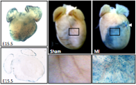
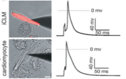
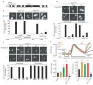
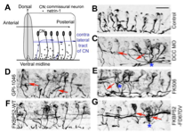
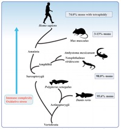
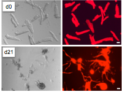
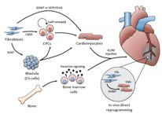
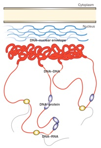

HUANG LAB AT UCSF

Cutie, S., Hoang, A. T., Payumo, A. Y., & Huang, G. N.
Unconventional functions of muscles in regeneration.
Dev Cell (in press)
Hirose, K.*, Payumo, A. Y.*, Cutie, S., Hoang, A., Zhang, H., Lunn, D., Gu, L., Bigley, R. B., Yu, H., Wang, J., Smith, M., Gillett, E., Wilson, E., Field, K. A., Reeder, D. M., Maden, M., Yarsev, M. M., Grutzner, F., Scanlan, T. S., Flamant, F., Buffenstein, R., Hu, G., Olgin, J. E., & Huang, G. N. (*, equal contribution)
Hormonal control of cardiomyocyte proliferative and regenerative potential in development and evolution.
Submitted
Bigley, R., Payumo, A., Alexander J. & Huang, G. N. (2017 Jan 12)
Insights into nuclear dynamics using live-cell imaging approaches.
WIREs Systems Biology and Medicine PDF
Judd, J. & Huang, G. N. (2016 Dec 13)
Cellular approaches to adult mammalian heart regeneration.
In Innovations in Molecular Mechanisms and Tissue Engineering, New York: Springer Publishing PDF
Judd, J., Lovas, J., & Huang, G. N. (2016 Aug 28)
Isolation, culture and transduction of adult mouse cardiomyocytes.
J Vis Exp. (114). doi: 10.3791/54012 PubMed
Judd, J., Xuan, W., & Huang, G. N. (2016 Feb 23)
Cellular and molecular basis of heart regeneration.
Turkish J Biology (40):265-275 PDF
Huang, G. N., Thatcher, J. E., McAnally, J., Kong, Y., Qi, X., Tan, W., DiMaio, M., Amatruda, J. F., Gerrard, G., Hill, J. A., Bassel-Duby, R. & Olson, E. N. (2012 Dec 21)
C/EBP transcription factors mediate epicardial activation during heart development and injury.
Science (Research Article). 338 (6114): 1599-1603. PDF PubMed
Song, K., Nam, Y., Luo, X., Qi, X., Tan, W., Huang, G. N., Acharya, A., Smith, C. L., Tallquist, M. D., Nelson, E. G., Hill, J., Bassel-Duby, R. & Olson, E. N. (2012 May 13)
Heart repair by expression of cardiac transcription factors in non-cardiomyocytes in vivo.
Nature (Research Article). 485(7400):599-604. PubMed
Shim, S., Yuan, J. P., Kim, J. Y., Zeng, W., Huang, G., Milshteyn, A., Kern, D., Muallem, S., Ming, G. L., & Worley, P. F. (2009 Nov 25)
Peptidyl-Prolyl Isomerase FKBP52 Controls Chemotropic Guidance of Neuronal Growth Cones via Regulation of TRPC1 Channel Opening.
Neuron. 64(4):471-83. PubMed
Zeng, W., Yuan, J. P., Kim, M. S., Choi, Y. J., Huang, G. N., Worley, P. F. & Muallem S. (2008 Nov 7)
STIM1 gates TRPC channels, but not Orai1, by electrostatic interaction.
Mol Cell. 32(3):439-48. PubMed
Huang, G. N., Huso, D., Bouyain, S., Tu, J., McCorkell, K. A., May, M. J., Zhu Y., Lutz M., Collins S., Dehoff M., Kang S., Whartenby, K., Powell J., Leahy, D., & Worley, P. F. (2008 Jan 25)
NFAT binding and regulation of T cell activation by the cytoplasmic scaffolding Homer proteins.
Science. 319 (5862): 476-81. PubMed
Yuan, J. P., Zeng, W., Huang, G. N., Worley, P. F. & Muallem S. (2007 Jun)
STIM1 heteromultimerizes TRPC channels to determine their function as store-operated channels.
Nature Cell Biology. 9(6):636-45. PubMed
Huang, G. N*., Zeng, W., Kim*, J. Y., Yuan, J.P., Han, L., Muallem, S. & Worley, P. F. (2006 Sep)
STIM1 carboxyl-terminus activates native SOC, I(crac) and TRPC1 channels.
Nature Cell Biology. 8(9): 1003-10. (*, equal contribution). PubMed











Before 2014
Selected Publications